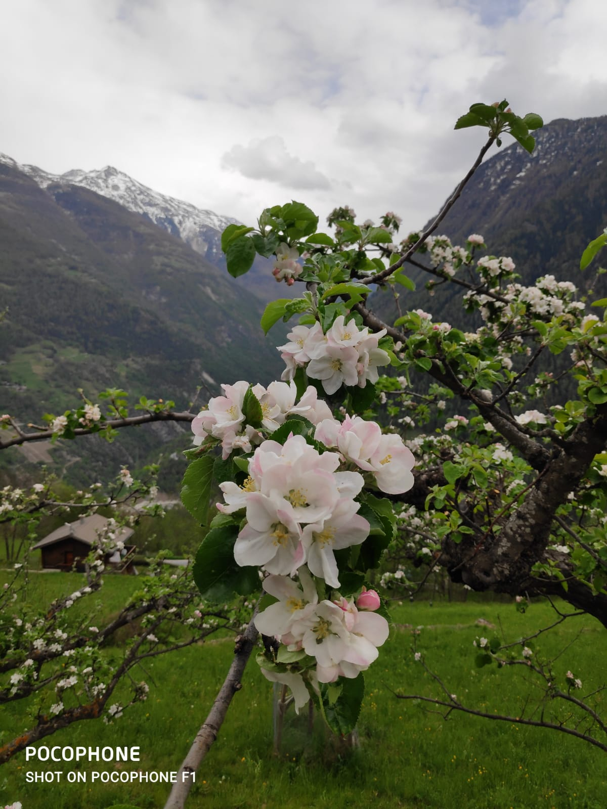
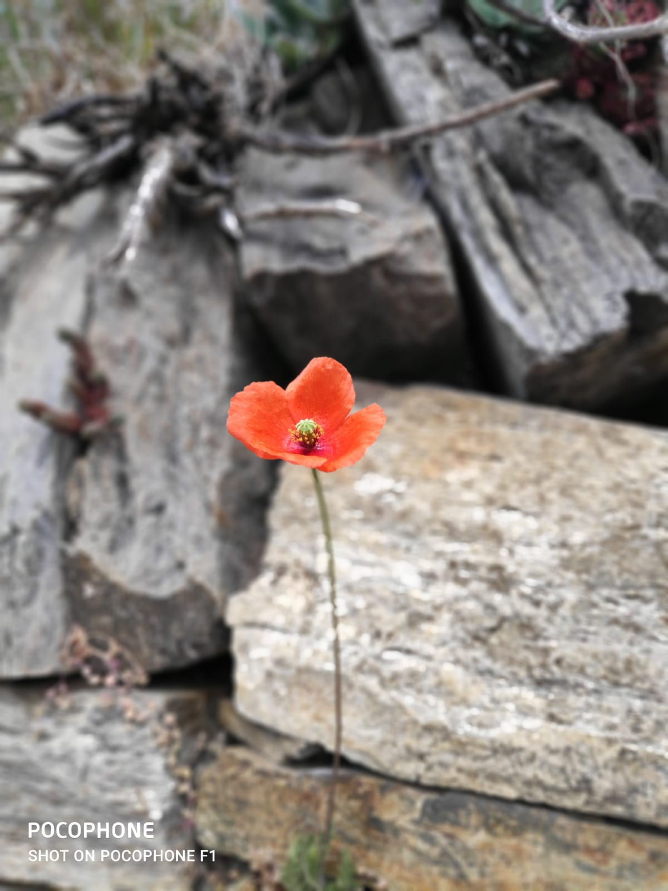
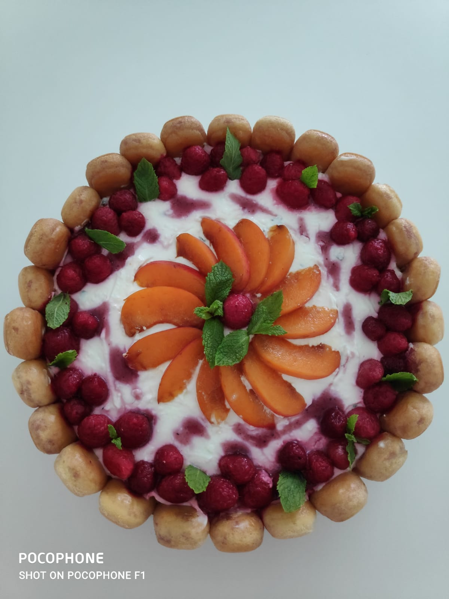
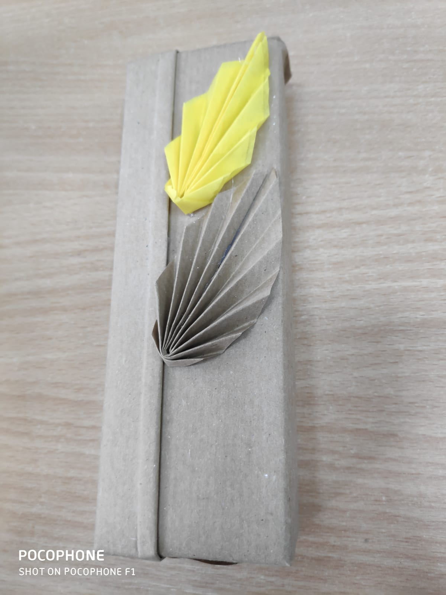
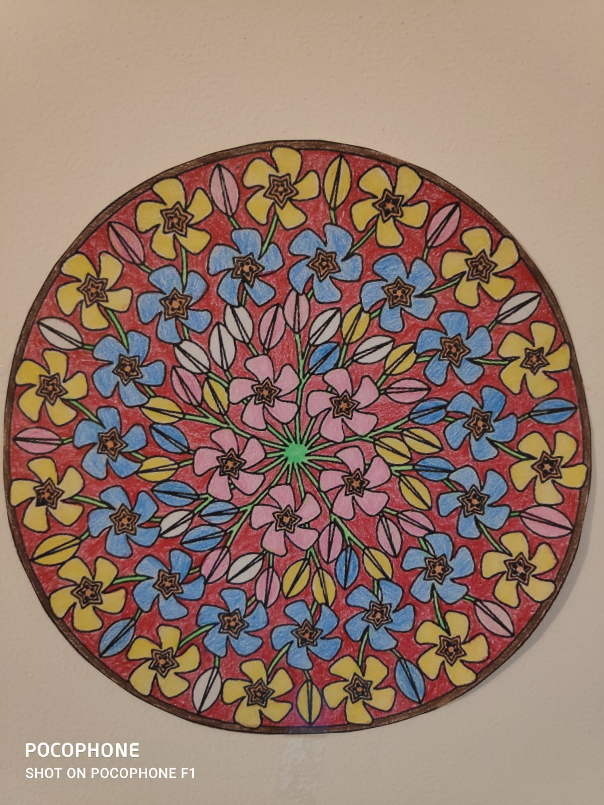
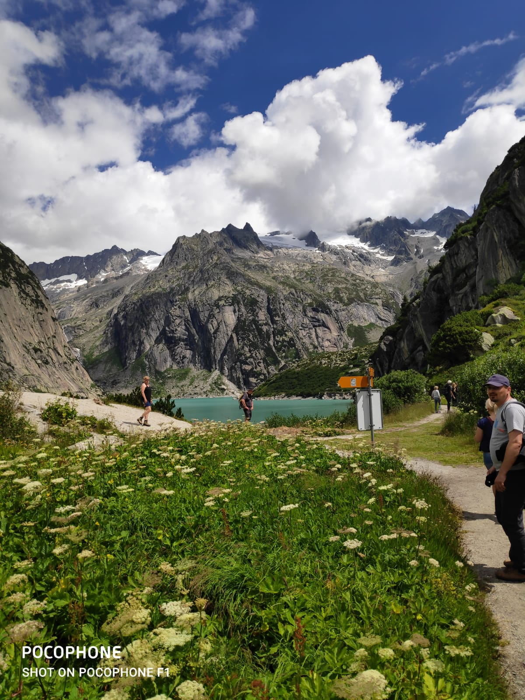

01/10/2005–30/07/2006 Masterat în Antropologie și Studii Multiculturale
EQF level 7
Facultatea de Studii Europene, Universitatea "Babeș- Bolyai"Cluj- Napoca (România)
- specializare "Antropologie și studii multiculturale"
01/10/1999–30/09/2004 Licențiat în Filologie
EQF level 6
Facultatea de Litere, Universitatea "Babeș- Bolyai"Cluj- Napoca (România)
- specializare "Limba și literatura română. Etnologie"
15/09/1994–30/06/1999 Bacalaureat
EQF level 4
Colegiul Pedagogic "Gheorghe Lazăr" Cluj- Napoca (România)
- specializare "Învățător- educator"

| Limba | Nivelul | |
|---|---|---|
| Limba română | C2 | |
| Limba franceză | B2 | |
| Limba engleză | B2 | |
| Limba italiană | A1 |
Perioada: 1999- prezent
Angajator: Ministerul Educației și Cercetării
Inspectoratul Județean Cluj
Școala Gimnazială "Ion Creangă"
Locație: Cluj- Napoca, Cluj, România
Funcție didactică: profesor pentru învățământul primar
Specializare: ciclul primar de învățământ
Descrierea sarcinilor de lucru:
Profesor-mentor pentru un profesor învățământ primar debutant;
Profesor-mentor pentru un grup de cinci studente de la Facultatea de Pedagogie, din cadrul Universității "Babeș- Bolyai"Cluj- Napoca (România)
iunie 2020- absolvirea cursului de formator:
iulie 2020- (în desfășurare) curs Software Testing:
Excelente abilități organizatorice și de monitorizare a grupurilor mari de oameni
Orientare spre psihologia aplicată
Capacități foarte bune de trainer
Orientare spre psihologia aplicată
Creativitate
Seriozitate și perseverență
© S.C.Continental Sibiu, România
Am lucrat timp de o lună în cadrul Departamentului de Resurse Umane (HR), cu sarcini specifice de recrutare și de programare a interviurilor.
Colaborez la actualizarea permanentă a site-ului instituției școlare la care lucrez: Colaborare

     